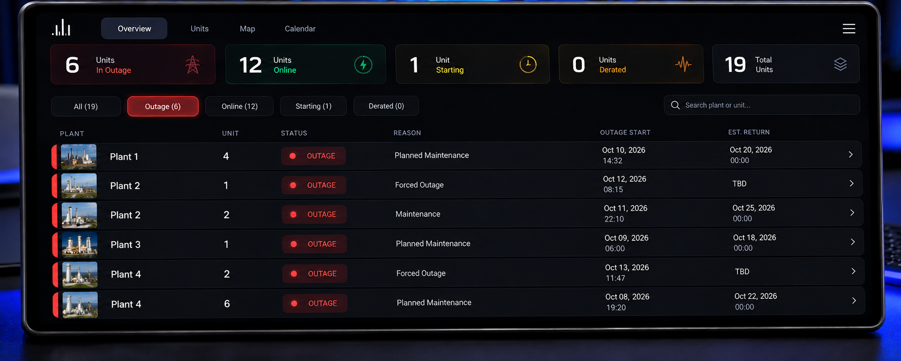

Operate first
Software decisions begin with the operator, the procedure, and the real-world consequence.
Austin L. Alexander · Greater Houston Area
I’m Austin Alexander. I operate power-generation assets, coordinate high-stakes technical projects, and build software shaped by firsthand operating experience.
I’m an operations systems professional whose career started in wind-turbine field work and progressed through gas-fired plant operations, Remote Operations Center development, and centralized generation operations. Along the way, I began building the dashboards, mobile workflows, and software I wanted operators to have.
Software decisions begin with the operator, the procedure, and the real-world consequence.
Clear dashboards, records, and communication reduce ambiguity when timing matters.
Tools should be fast, direct, and usable wherever the work is happening.
02 / Experience
A progression through field service, plant operations, project development, and software-enabled remote operations.
Torkworx
Performed field torque and tension work supporting wind-turbine operations.
Temporary Assignment · IHI Power Services
Supported generation operations at Wharton County Generation, moving from an initial temporary assignment into a continuing plant role.
NAES · Wharton County Generation
Advanced to Technician II in April 2023. Operated gas-fired generation equipment and plant controls while communicating equipment conditions and operational issues.
IHI Power Services · Corporate
Coordinated a Remote Operations Center buildout spanning facility work, contractors, vendors, IT systems, connectivity, and digital logbook integration.
NAES · Remote Operations Center
Perform plant startups, ongoing operations, and shutdowns from a centralized control environment. Maintain outage records and operational communications while designing internal dashboards and workflow tools.
03 / Selected products
Independent and internal product concepts designed around visibility, consistency, mobile field work, and faster access to operational context.
01
Fleet visibility
A widescreen operating view for monitoring unit status, outage reasons, expected returns, and fleet-level availability.

02
Generation dashboard
A focused display for current and desired output, change over time, market signals, and API health across multiple plants.

03
Portfolio intelligence
A responsive asset portfolio experience derived from structured workbook data, with capacity, market, configuration, and unit views in light and dark modes.


04
Enterprise search
A secure, mobile-first search experience for contacts, assets, vendors, and operational information.

05
Native operations workflow
A native iOS operating workflow for selecting units, recording startup and shutdown events, and keeping multiple activities organized in one session.


06
Operations assistant
Cailyn brings planning, routines, reminders, operational context, knowledge, and assistant capabilities into a unified interface.

04 / Capabilities
A combination of plant operations, project coordination, interface design, and software engineering.
Plant startup and shutdown · Centralized operations · DCS and alarm monitoring · Outage documentation · Operational communications
ROC coordination · Vendor and contractor management · Facility integration · Digital logbooks · IT and ISP coordination
Interface systems · Mobile workflows · Dashboards · Asset tracking · Reporting tools · AI assistant prototypes
Swift · SwiftUI · Python · JavaScript · TypeScript · React · Next.js · REST APIs · Git · GitHub
05 / Contact
Available for conversations about operations technology, internal software, product development, and power-generation systems.